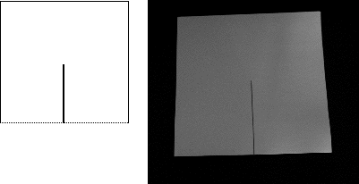
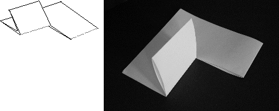

Start with a 9 by 18 inch piece of paper and fold it in half the short way to get a folded sheet 9 by 9 inches.
Mark the middle of the crease and make a cut from the crease half way to the opposite side. Dotted lines indicate creases.
|  |
| Folded sheet with the first cut |
Fold the piece immediately to the left of the first cut to bring the crease even with the opposite side.
|  |
| The first fold |
Return to the Sierpinski gasket.